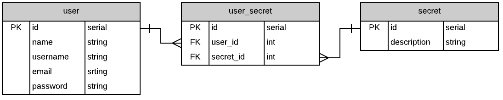

Make a local copy of the repository by cloning it to your computer. Run this command:
Navigate into the new package folder by running this command:
This is a node package with many dependencies. Assuming you have node installed run the following command:
Lets create the "environment variable". With the touch command create the .env file and put a token key/value inside.
Now boot it up and navigate to http://localhost:8080. You will see the signup, login forms as well as the instructions to install.
For this package to work out of the box you will want to name your database exampledb. If you want to change the database name look in the root of express-with-auth for a file called knexfile.js. Inside that you will see the path to postgresql://localhost/exampledb. Change that to whatever your heart desires. Use this command you will use to create the db:
This is an ERD diagram of how the posgresql table schema is laid out.
If you are ok with how we constructed the data you can run the commands below. The ERD is for visual purposes only.
Log in to the pre-created accounts you see below. The password for all the default users is "password". After login you will see the users dashboard as well as a secret specific to each user. The data specific to each user is the authorized to see.
If you don't alread have a heroku account you can create one at heroku.com. After you do that run the command you see below in your terminal. You will be prompted for your email address and password.
You can initialize a new heroku app by running this command:
When you did "heroku create" there was a web address for your new app. It would look something like this "https://intense-journey-34289.herokuapp.com/". You need to copy that and replace the "http://localhost:8080/" inside two files.
Now save your work and then commit
Your files are ready to to be transfered to heroku. Do that with this command:
Just like your local host heroku needs the enviroment variable however, it is added through the command line. Run this command:
Provision a postgresql database with this command:
To migrate and seed on the server run the following commands: